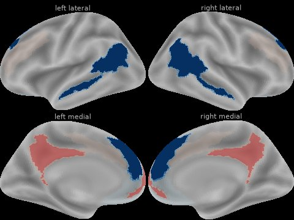
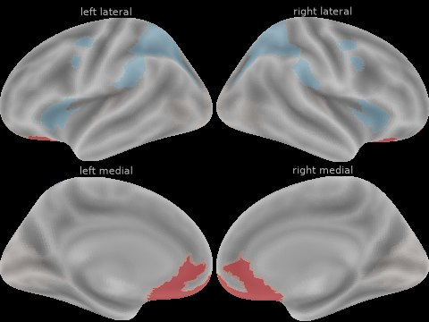
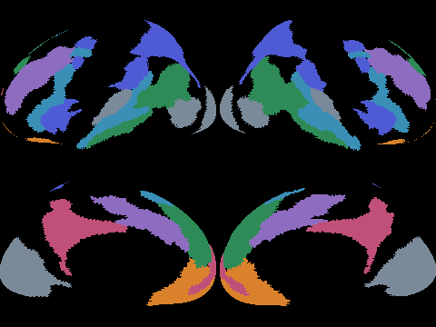
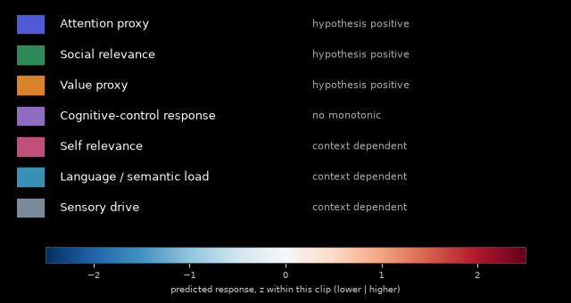

How to present predicted brain-response proxies, behavioral outcomes, and real platform performance without turning the science into a fake "virality score".
The product should look like an advanced “brain + behavior” analysis system, but every visual must make clear which layer is measured, predicted, or merely a research proxy.
Real platform outcomes. Views, watch time, retention, shares, saves, comments, likes, completion, velocity and account context.
ground truthModel outputs. Expected 3s/5s hold, completion, share rate, save rate, replay likelihood and normalized distribution potential.
trained predictionResearch-derived latent signals. Attention, value, social relevance, cognitive friction, sensory drive and memorability proxies.
not literal intentpredictions.status is not_available until a behavior model is trained on real outcomes; observed metrics arrive later from an exported outcome file.The editor scrubs the video and sees what changes in the predicted audience response at that exact moment, then receives a concrete reason and an edit hypothesis. The timeline is the primary product; the 3D brain is the visual explainer.
In v0.2 the chain stops after the second box: neural proxies and rule-based moments are available; predicted audience behavior and real post outcomes are not yet connected.
The screen should answer three questions in under five seconds: Where does the video lose or gain attention? Why? What should I change?

Attention proxy falls 1.8 z below its level in the preceding 3 s while the shot stays unchanged, relative to this clip.
Untested edit hypothesis Test a visual state change here (cut, B-roll, zoom or caption change).
| Region | Purpose | Frontend rule | v0.2 binding |
|---|---|---|---|
| Top bar | Video/model identity, processing state, confidence | Always show model version and whether the result is research-only. | model_versions.neural, “Research only” (research_only is always true), confidence “uncalibrated”; red SYNTHETIC pill when synthetic: true. |
| Video player | Source of truth for time | Scrubbing must update every plot and brain map within one animation frame after data is loaded. | Time base is stimulus time; sample index = floor(t × timing.display_hz). |
| Outcome strip | Predicted behavioral metrics | Use probabilities/rates with intervals, not a universal score. | Must render the not_available state (empty card + predictions.reason) without placeholder numbers. |
| Timeline | Primary analysis tool | Allow toggling signals; default to 3-4 lines max to prevent chart noise. | Show channels[] with default_visible: true (4 lines); draw steps, keep gaps. |
| Brain map | Research explainer | Relative response only. Tooltip names ROI, proxy, z-score and evidence source. | Pre-rendered sprite tile for the current time (assets.brain_map); gap → dimmed + “no prediction”. |
| Moment insight | Turns model output into action | Every recommendation must point to a timestamp and a measurable hypothesis. | moments[]: observations or untested edit hypotheses with a test_metric; no behavior deltas. |
Do not encode one universal direction. Some useful content correlates involve increased activity; preferred short-video viewing has also been associated with deactivation of dACC/dlPFC relative to videos that viewers terminate early. The frontend therefore displays pattern-specific proxies, not “more = better”. [S3]
| Frontend signal | Scientific basis | Display direction | Copy |
|---|---|---|---|
| Attention capture | Temporal reliability / synchrony; attention and sensory networks | Higher can be better, but compare against behavioral outcomes | “Strong predicted attention capture” |
| Sustained attention | Stable response through time; eventual product label learned from retention | Higher desired | “Attention remains stable through payoff” |
| Value / reward proxy | vmPFC/OFC cortical proxy; TRIBE checkpoint does not include NAcc | Higher hypothesized positive | “Higher cortical value proxy” |
| Social relevance | dmPFC / TPJ / precuneus networks associated with thinking about others and sharing | Higher hypothesized positive for transmission | “Higher social-relevance proxy” |
| Self relevance | mPFC / PCC-related self-processing | Context-dependent | “Self-relevance proxy rises here” |
| Cognitive friction | dACC / dlPFC control demand | Do not hard-code sign; learn from own dataset | “Control-network response changes” |
| Memorability | BOLD Moments labels + cortical correlates | Higher desired for recall, not necessarily watch time | “Predicted memorability” |
| Arousal / orienting | Future EEG/pupil student model from EMD | Context-dependent; peak timing matters | “Arousal proxy peak” |
Continued on the next page: the v0.2 channel keys that implement this taxonomy.
Generated from tribe_research/brain/proxies_v0.yaml (proxies_v0). Each channel is the vertex-weighted mean of its HCP-MMP1 ROI groups, z-scored within the clip. Labels and colours below are the exact strings the UI receives.
| key | label | direction | default_ | color | regions_text |
|---|---|---|---|---|---|
attention | Attention proxy | hypothesis_positive | true | #4F5BD5 | Dorsal attention (FEF / IPS) and ventral attention / salience (insula / frontal operculum) |
social | Social relevance | hypothesis_positive | true | #2E8B57 | TPJ / posterior STS and dmPFC |
value | Value proxy | hypothesis_positive | true | #D9822B | vmPFC / medial OFC (cortical proxy only; no NAcc in the TRIBE checkpoint) |
control | Cognitive-control response | no_monotonic | true | #8E6CC0 | dACC and dlPFC |
self | Self relevance | context_dependent | false | #C0507A | mPFC, PCC and precuneus |
language | Language / semantic load | context_dependent | false | #3A8FB7 | IFG (44/45), STG/STS language areas |
sensory | Sensory drive | context_dependent | false | #7A8A99 | Early visual, visual motion (MT+) and auditory cortex |
direction enum| value | Frontend meaning |
|---|---|
learned_positive | Higher is associated with better outcomes, validated on our held-out outcomes. No channel has this yet. |
learned_negative | Lower is associated with better outcomes, validated on our held-out outcomes. No channel has this yet. |
hypothesis_positive | Literature prior only: higher is hypothesized positive and must still be validated. Label it a hypothesis; no good/bad colouring. |
context_dependent | Meaning depends on the content and the moment. Neutral colouring; describe, never grade. |
no_monotonic | Neither direction is better; never colour one direction as good. |
control (“Cognitive-control response”) with direction: no_monotonic: the original “do not hard-code sign” rule, now machine-readable.channels[attention].summary.stability (1 / (1 + sd of post-onset first differences)).learned_* in v0.2, so no proxy may be shown as good or bad.unavailable_channels: disabled, with the reason textEverything should resolve to timestamped curves and events. The editor needs to know when the video works, not merely whether the whole video scores well.
| Required lane (v0.1) | v0.2 source | Rendering |
|---|---|---|
| Observed retention / replay curve when available | unavailable_channels key observed_retention (kind observed) | Disabled lane with reason: “Outcome import not built yet.” |
| Predicted hold / completion trajectory | unavailable_channels key hold (kind behavior) | Disabled lane with reason: “Behavior model not trained yet.” |
| Attention, social relevance, value, cognitive-control response | channels[] with default_visible: true | Step lines in color; self / language / sensory are off by default. |
| Shot boundaries | events.shots_ms | [] = computed, no cuts found; null = not computed (then unavailable_lanes contains shots). |
| Speech | events.words (start_ms, end_ms, text) and events.speech_spans_ms | Words closer than 0.6 s merge into one span. Empty in the sample (quality.has_words: false). |
| Text changes, speaker changes, audio onsets | events.unavailable_lanes (text_changes, speaker_changes, audio_onsets) | Disabled lanes with their reason; never guessed. |
| Model-generated candidate edit zones | moments[] | Observation = thin outline; edit_hypothesis_untested = dashed highlight. |
timing.display_hz); values[k] covers [k/2, (k+1)/2) s.timing.native_tr_s, 1.0 s in the sample). Draw steps; do not smooth or imply finer resolution.null = no prediction (TRIBE drops segments with no events; spans in timing.gaps_ms). Leave a visible gap/hatch; never interpolate.timing.onset_window_ms [0, 2000] is the onset response. Shade it lightly and exclude it from “strongest moment” call-outs (moment.in_onset_window). The z scale is estimated outside it (within_clip_z_excluding_onset).time_base: "stimulus": the 5 s hemodynamic lag is already removed, so t lines up with the video frame.moments.py)kind: attention_drop, broad_response (≥ 3 channels rising together), proxy_rise, proxy_fall.attention_drop: a fall run ≥ 1.5 z below the highest attention level in the preceding 3 s. Evidence adds static_visual (no shot boundary from 1 s before the run to its end), speech_continues (speech covers ≥ half the span), language_load_high (mean language z > 0.5).hypothesis + test_metric (status edit_hypothesis_untested); everything else is an observation. severity ranks within this clip only.attention_drop · status edit_hypothesis_untested · confidence uncalibrated · in_onset_window false. Illustrative values; no behavior delta is shown because v0.2 has none.Pattern: attention falls while semantic load stays high and the visual scene is unchanged.
Hypothesis: payoff arrives too late.
Action: bring the reveal forward by ~3.5s or introduce a visual state change.
The language should remain an edit hypothesis until it is validated by real posting outcomes.
predictions = {status: "not_available", reason, metrics: {}}. Render an empty state with reason; never show placeholder numbers. The schema forbids metrics while the status is not_available.1s/3s/5s hold, average watch %, completion, predicted drop zones.
Shares/sends, saves, replay likelihood, social-relevance contribution.
Normalized expected views, velocity and platform-specific expansion potential.
| Metric | TikTok | YouTube Shorts | Intrinsic content estimate | |
|---|---|---|---|---|
| 5s hold | 76% | 71% | 79% | 75% |
| Completion | 58% | 62% | 65% | 61% |
| Share percentile | P82 | P88 | P66 | P79 |
| Distribution residual | +0.9 | +0.5 | +0.3 | +0.6 |
Values above are illustrative. “Intrinsic” should come from a hierarchical content-quality model, not a simple average.
The product becomes much more useful when an editor can compare the original cut against proposed revisions before publishing.
5s hold: 68%
Completion: 54%
Share percentile: P61
Largest risk: 2.1-4.4s payoff delay.
5s hold: 76% +8
Completion: 58% +4
Share percentile: P64
Reveal moved to 2.7s.
5s hold: 72% +4
Completion: 63% +9
Share percentile: P75 +14
Shorter intro + social framing.
The UI should not know how TRIBE, EEG proxies or behavior models are implemented. It consumes a versioned analysis object with aligned time-series channels. v0.2 freezes that object as nvi.analysis.v0.2: docs/analysis.schema.json (JSON Schema 2020-12), with a synthetic example bundle in docs/sample_analysis/.
{
"schema_version": "nvi.analysis.v0.2",
"analysis_id": "a_dcd5bbec8ea7",
"video_id": "cd20b16879d630c4",
"source_name": "clip",
"duration_ms": 26100,
"status": "complete",
"research_only": true,
"synthetic": true,
"model_versions": {"neural": "tribe-roi-proxies_v0", "behavior": null, "explain": "neural-moments-0.1.0"},
"provenance": {"tribe_commit": null, "roi_map": {…}, "proxies_version": "proxies_v0",
"feature_version": "summary_v0",
"normalization": "within_clip_z_excluding_onset"},
"timing": {
"time_base": "stimulus",
"note": "TRIBE predictions are pre-shifted 5 s for hemodynamic lag; t=0 is the first video frame.",
"native_tr_s": 1.0,
"display_hz": 2,
"n_display_samples": 53,
"onset_window_ms": [0, 2000],
"gaps_ms": []
},
"predictions": {"status": "not_available", "reason": "Behavior model not trained yet.", "metrics": {}},
"channels": [
{
"key": "attention",
"label": "Attention proxy",
"kind": "neural_proxy",
"unit": "z_within_clip",
"direction": "hypothesis_positive",
"direction_note": "Higher can be better, but compare against behavioral outcomes before relying on it.",
"confidence": "uncalibrated",
"source_model": "tribev2",
"research_status": "research_proxy",
"hz": 2,
"native_tr_s": 1.0,
"resampling": "sample_and_hold",
"default_visible": true,
"color": "#4F5BD5",
"basis": {
"roi_groups": ["attention_dorsal", "attention_ventral"],
"regions_text": "Dorsal attention (FEF / IPS) and ventral attention / salience (insula / frontal operculum)",
"atlas": "HCP-MMP1"
},
"copy": {
"tooltip": "Predicted response in attention and salience networks, relative to the rest of this clip.",
"rise": "Strong predicted attention capture",
"fall": "Predicted attention response falls"
},
"values": [-1.258, -1.258, -2.242, -2.242, 0.453, … (53 total)],
"summary": {
"mean_0_3s": -1.016,
"mean_0_5s": -0.677,
"peak_z": 2.06,
"peak_time_ms": 23000,
"trough_z": -2.242,
"trough_time_ms": 1000,
"stability": 0.396
}
},
… 6 more: social, value, control, self, language, sensory
],
… continued …
"unavailable_channels": [
{
"key": "memorability",
"kind": "neural_proxy",
"reason": "Needs a BOLD Moments student model (backend guide §06); not built."
},
{
"key": "arousal",
"kind": "neural_proxy",
"reason": "Needs an EEG/pupil student model (EEG Moments); not built."
},
{"key": "hold", "kind": "behavior", "reason": "Behavior model not trained yet."},
{"key": "observed_retention", "kind": "observed", "reason": "Outcome import not built yet."}
],
"events": {
"shots_ms": [],
"words": [],
"speech_spans_ms": [],
"unavailable_lanes": [
{"key": "text_changes", "reason": "No OCR pass yet."},
{"key": "speaker_changes", "reason": "No diarization pass yet."},
{"key": "audio_onsets", "reason": "No audio-onset detector yet."}
]
},
"moments": [
… m1–m3 (observations),
{
"kind": "attention_drop",
"start_ms": 6000,
"end_ms": 9000,
"channels": ["attention"],
"peak_z": -1.45,
"severity": 0.97,
"title": "Attention proxy drop",
"description": "Attention proxy falls while the shot stays unchanged. Drop of 2.9 z, relative to this clip.",
"evidence": ["attention_drop", "static_visual"],
"hypothesis": "Test a visual state change here (cut, B-roll, zoom or caption change).",
"test_metric": "retention over this span (observed, or predicted once the behavior model exists)",
"status": "edit_hypothesis_untested",
"relative_to": "this_clip",
"confidence": "uncalibrated",
"in_onset_window": false,
"id": "m4"
},
… m5–m12 (12 total)
],
"assets": {
"region_map": {
"idmap_src": "../_static/region_idmap.png",
"legend_src": "../_static/region_legend.png",
"ids": {"#4f5bd5": "attention", "#2e8b57": "social", … 7 total}
},
"brain_map": {
"mode": "proxy",
"src": "brain_proxy.jpg",
"tile_w": 480,
"tile_h": 360,
"cols": 10,
"rows": 3,
"frame_start_ms": [0, 1000, 2000, 3000, 4000, … (27 total)],
"frame_end_ms": [1000, 2000, 3000, 4000, 5000, … (27 total)],
"views": ["left lateral", "right lateral", "left medial", "right medial"],
"colormap": {"name": "RdBu_r", "vmin": -2.5, "vmax": 2.5, "threshold": 0.5, "unit": "z_within_clip"}
}
},
"quality": {
"n_segments": 27,
"has_words": false,
"warnings": [
"SYNTHETIC: dry-run predictions, not TRIBE output.",
"No transcribed words: language-driven signals rely on audio/video only."
]
}
}| Key | Frontend use |
|---|---|
schema_version | "nvi.analysis.v0.2"; refuse unknown versions. |
analysis_id, video_id, source_name | Identity; source_name is the upstream id for the later outcome join. |
duration_ms, status | Timeline length; status is queued, processing, complete or failed. |
research_only, synthetic | Always true / SYNTHETIC banner when true. |
model_versions, provenance | Top bar and “See evidence”; behavior is null in v0.2. |
timing | Grid, native step, onset window and gaps (§04 cont.). |
predictions | not_available in v0.2: empty state (§05). |
channels, unavailable_channels | Timeline lanes and toggles (§03 cont., §04). |
events, moments | Event lanes and candidate zones (§04). |
assets | Brain map sprite, region map, legend (§08). |
quality | warnings render as notices next to the top bar. |
| v0.1 requirement | v0.2 field(s) | Value in v0.2 data |
|---|---|---|
| kind | kind | "neural_proxy" (enum: neural_proxy, behavior, observed) |
| unit | unit | "z_within_clip" (constant) |
| direction | direction + direction_note | enum in §03 (cont.); note is display copy |
| confidence | confidence | "uncalibrated" (enum: uncalibrated, low, medium, high) |
| source model | source_model (+ model_versions.neural) | "tribev2" / "tribe-roi-proxies_v0" |
| time resolution | hz, native_tr_s, resampling | 2, 1.0, "sample_and_hold" |
| research status | research_status | "research_proxy" (enum: research_proxy, validated) |
severity ranks moments within this clip only. synthetic: true must show a SYNTHETIC banner. research_only is always true. Asset paths are relative to the analysis.json folder.The brain is rendered offline, so the frontend only swaps sprite tiles and reads pixels. It needs no WebGL.


| Sprite field | Meaning |
|---|---|
mode | "proxy": each channel’s region painted with its z. "research_vertex": per-vertex map. |
src | Sprite image, relative to the analysis.json folder (brain_proxy.jpg). |
tile_w, tile_h | Tile size in px (480 × 360). Each tile holds 4 views in a 2×2 layout. |
cols, rows | Sprite grid, row-major (10 × 3 in the sample; 27 tiles used). |
frame_start_ms, frame_end_ms | One entry per tile = one native TRIBE step. Show tile i while frame_start_ms[i] ≤ t < frame_end_ms[i]. |
views | left lateral, right lateral, left medial, right medial. |
colormap | RdBu_r diverging, vmin -2.5 / vmax 2.5, threshold 0.5 (faded below), unit z_within_clip. |
assets.region_map)tile_w/tile_h).#rrggbb.ids → channel key. #000000 = no channel: no tooltip.label, basis.regions_text, current z (values[floor(t × display_hz)]) and copy.tooltip.The idmap is static per ROI-map version. legend_src shows channel colours, directions and the colormap.

direction and the RdBu_r scale. Synthetic sample — dry-run predictions, real HCP-MMP1 regions.If t falls in timing.gaps_ms (no tile covers it), dim the brain panel and label it “no prediction”. Never hold the previous tile silently. Tiles inside the onset window get the same light “onset response” note as the timeline.
assets.research_vertex_mapSame sprite shape with mode: "research_vertex" (brain_vertex.jpg in real bundles): the raw per-vertex prediction. Show it only when Research mode is enabled. Absent from the synthetic sample. Optional summary_png and demo_mp4 are also absent there.
| State | UI treatment | Recommended wording |
|---|---|---|
| Research-only neural signal | Orange “Research proxy” badge | “Predicted social-relevance response” |
| Behavior model calibrated | Blue metric + interval | “Predicted 5-second hold: 74% (69-79%)” illustrative, not v0.2 |
| Low confidence / OOD | Muted chart, warning icon | “Low confidence: this format is underrepresented in training data.” |
| Observed post data | Green “Observed” badge | “Actual 5-second hold: 78%” illustrative, not v0.2 |
| Edit hypothesis | Dashed highlight | “Test moving the reveal earlier.” |
| Validated edit uplift | Solid highlight + experiment ID | “Variant B improved normalized 5s hold by +6.1 pts.” illustrative, not v0.2 |
| v0.2 SYNTHETIC data | SYNTHETIC red banner when synthetic: true | “SYNTHETIC — dry-run data, not model output” |
| v0.2 Behavior not available | Empty card, no numbers | “Behavior model not trained yet” |
| v0.2 No prediction gap | Hatched/dimmed lane; brain dimmed | “no prediction” |
| v0.2 Onset window | Muted shading over 0–2 s | “first 2 s: onset response” |
| v0.2 Candidate moment (observation) | Thin outline | “Observation · relative to this clip” |
| v0.2 Edit hypothesis, untested | Dashed highlight | “Untested edit hypothesis” |
| v0.2 Uncalibrated confidence | Muted confidence label | “Uncalibrated research proxy” |
learned_positive/learned_negative.| Priority | Component | Why | Data available in v0.2 |
|---|---|---|---|
| P0 | Video player + synchronized multi-signal timeline | Core analysis interaction. | Yes: neural lanes, shots, speech |
| P0 | Behavior prediction cards + confidence | Connects analysis to measurable outcomes. | No: render the not_available empty state |
| P0 | Moment inspector + edit hypothesis | Turns model signal into action. | Yes: moments[] |
| P0 | 2D cortical map synchronized to timeline | Strong demo value with manageable complexity. | Yes: brain map sprite + region map |
| P1 | Original vs edit comparison | Creates iterative workflow. | No: deltas need the behavior model |
| P1 | Observed outcome overlay | Closes model-to-reality loop. | No: outcome import not built |
| P2 | 3D WebGL brain | Great showcase; limited incremental utility. | No: 2D pre-rendered views only |
| P2 | Cross-platform intrinsic-quality panel | Requires backend hierarchical model to be trustworthy. | No |
| Avoid | Universal 0-100 “viral brain score” | Invites overclaiming and hides metric-specific signal. | — |
Scientific interpretations here are design priors, not validated biomarkers of virality. Product claims should be calibrated only after held-out evaluation on the company’s own platform outcomes.
predictions.status is not_available. Terminology callout adds “strong predicted response” wording.proxies_v0.yaml, the direction enum, sustained attention as summary.stability, memorability/arousal as disabled toggles.predictions: not_available. The v0.1 numbers are labelled illustrative target design.nvi.analysis.v0.2 sample. New top-level keys table. Signal metadata mapped to field names, plus contract rules.brain_map sprite, research_vertex_map, region_map hover lookup, legend, required brain caption.Data contract: docs/analysis.schema.json (nvi.analysis.v0.2, frozen). Example: docs/sample_analysis/ (synthetic).